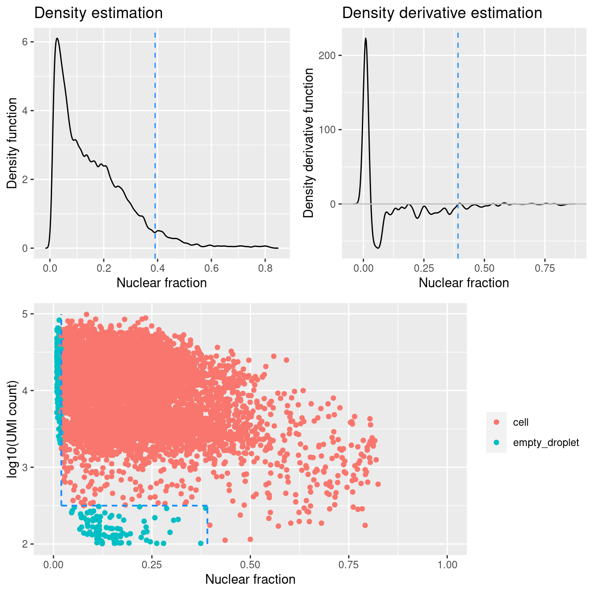
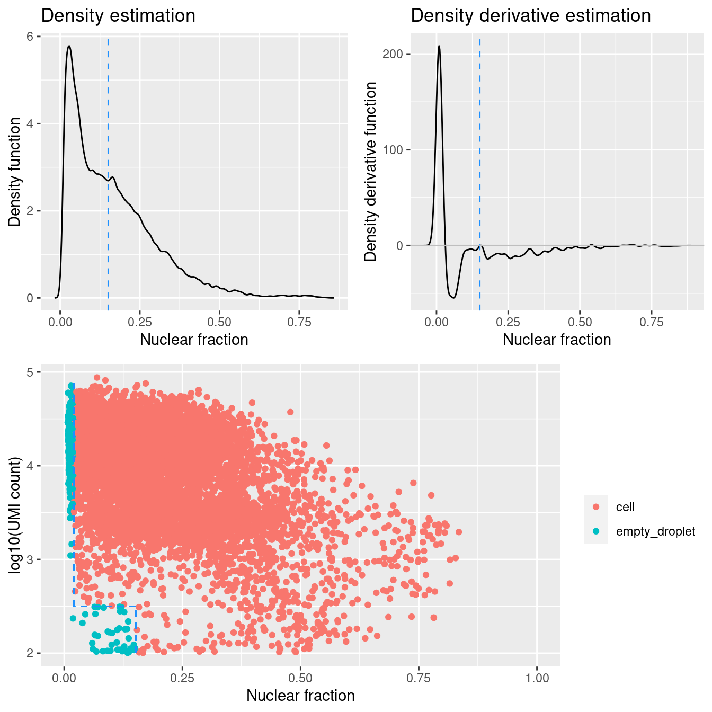
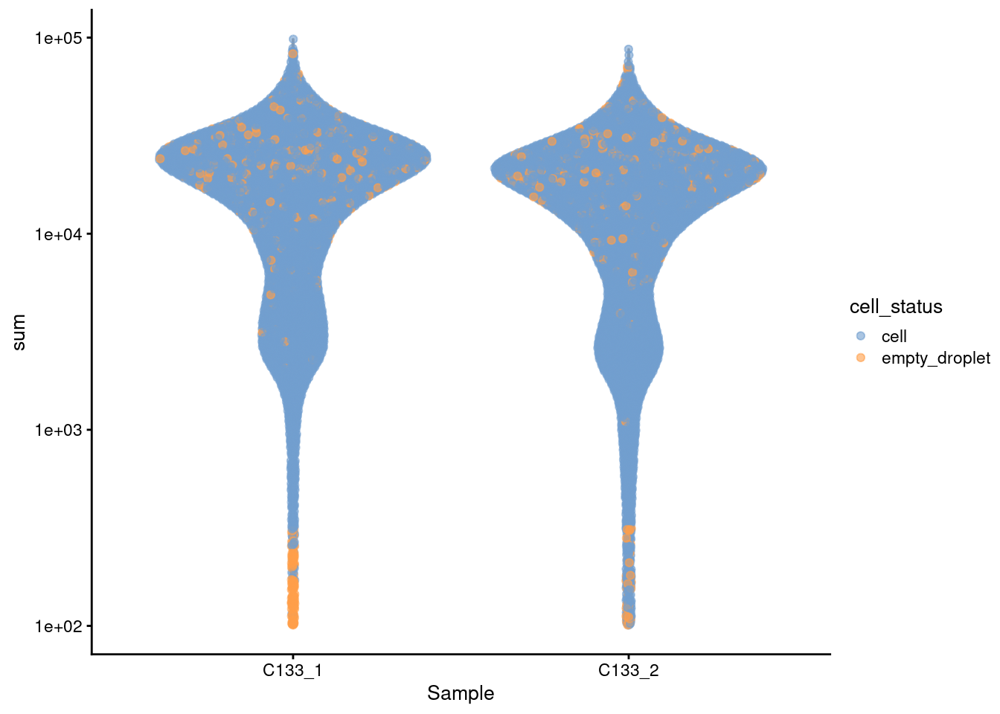

Last updated: 2022-06-16
Checks: 7 0
Knit directory:
paed-cf-cite-seq/
This reproducible R Markdown analysis was created with workflowr (version 1.7.0). The Checks tab describes the reproducibility checks that were applied when the results were created. The Past versions tab lists the development history.
Great! Since the R Markdown file has been committed to the Git repository, you know the exact version of the code that produced these results.
Great job! The global environment was empty. Objects defined in the global environment can affect the analysis in your R Markdown file in unknown ways. For reproduciblity it’s best to always run the code in an empty environment.
The command set.seed(20210524) was run prior to running the code in the R Markdown file.
Setting a seed ensures that any results that rely on randomness, e.g.
subsampling or permutations, are reproducible.
Great job! Recording the operating system, R version, and package versions is critical for reproducibility.
Nice! There were no cached chunks for this analysis, so you can be confident that you successfully produced the results during this run.
Great job! Using relative paths to the files within your workflowr project makes it easier to run your code on other machines.
Great! You are using Git for version control. Tracking code development and connecting the code version to the results is critical for reproducibility.
The results in this page were generated with repository version 8255c24. See the Past versions tab to see a history of the changes made to the R Markdown and HTML files.
Note that you need to be careful to ensure that all relevant files for the
analysis have been committed to Git prior to generating the results (you can
use wflow_publish or wflow_git_commit). workflowr only
checks the R Markdown file, but you know if there are other scripts or data
files that it depends on. Below is the status of the Git repository when the
results were generated:
Ignored files:
Ignored: .Rhistory
Ignored: .Rproj.user/
Ignored: analysis/obsolete/
Ignored: code/obsolete/
Ignored: data/190930_A00152_0150_BHTYCMDSXX/
Ignored: data/CellRanger/
Ignored: data/GSE127465_RAW/
Ignored: data/SCEs/02_ZILIONIS.sct_normalised.SEU.rds
Ignored: data/SCEs/03_C133_Neeland.demultiplexed.SCE.rds
Ignored: data/SCEs/03_C133_Neeland.emptyDrops.SCE.rds
Ignored: data/SCEs/03_C133_Neeland.nuclear_fraction_calls.rds
Ignored: data/SCEs/03_C133_Neeland.preprocessed.SCE.rds
Ignored: data/SCEs/03_CF_BAL_Pilot.CellRanger_v6.SCE.rds
Ignored: data/SCEs/03_CF_BAL_Pilot.emptyDrops.SCE.rds
Ignored: data/SCEs/03_CF_BAL_Pilot.nuclear_fraction_calls.rds
Ignored: data/SCEs/03_CF_BAL_Pilot.preprocessed.SCE.rds
Ignored: data/SCEs/03_COMBO.clustered.SEU.rds
Ignored: data/SCEs/03_COMBO.clustered_annotated_macrophages_diet.SEU.rds
Ignored: data/SCEs/03_COMBO.clustered_annotated_others_diet.SEU.rds
Ignored: data/SCEs/03_COMBO.clustered_annotated_tcells_diet.SEU.rds
Ignored: data/SCEs/03_COMBO.clustered_azimuth.SEU.rds
Ignored: data/SCEs/03_COMBO.clustered_azimuth_v2.SEU.rds
Ignored: data/SCEs/03_COMBO.clustered_diet.SEU.rds
Ignored: data/SCEs/03_COMBO.integrated.SEU.rds
Ignored: data/SCEs/03_COMBO.zilionis_mapped.SEU.rds
Ignored: data/SCEs/04_C133_Neeland.adt_dsb_normalised.rds
Ignored: data/SCEs/04_C133_Neeland.adt_integrated.rds
Ignored: data/SCEs/04_C133_Neeland.all_integrated.SEU.rds
Ignored: data/SCEs/04_CF_BAL_Pilot.CellRanger_v6.SCE.rds
Ignored: data/SCEs/04_CF_BAL_Pilot.emptyDrops.SCE.rds
Ignored: data/SCEs/04_CF_BAL_Pilot.preprocessed.SCE.rds
Ignored: data/SCEs/04_CF_BAL_Pilot.transfer_adt.SEU.rds
Ignored: data/SCEs/04_COMBO.clean_clustered.SEU.rds
Ignored: data/SCEs/04_COMBO.clean_clustered.SEU_bk.rds
Ignored: data/SCEs/04_COMBO.clean_integrated.SEU.rds
Ignored: data/SCEs/04_COMBO.clean_integrated.SEU_bk.rds
Ignored: data/SCEs/04_COMBO.clean_macrophages_diet.SEU.rds
Ignored: data/SCEs/04_COMBO.clean_others_diet.SEU.rds
Ignored: data/SCEs/04_COMBO.clean_tcells_diet.SEU.rds
Ignored: data/SCEs/04_COMBO.clustered.SEU.rds
Ignored: data/SCEs/04_COMBO.clustered_annotated_adt_diet.SEU.rds
Ignored: data/SCEs/04_COMBO.clustered_annotated_lung_diet.SEU.rds
Ignored: data/SCEs/04_COMBO.clustered_annotated_macrophages_diet.SEU.rds
Ignored: data/SCEs/04_COMBO.clustered_annotated_others_diet.SEU.rds
Ignored: data/SCEs/04_COMBO.clustered_annotated_tcells_diet.SEU.rds
Ignored: data/SCEs/04_COMBO.clustered_diet.SEU.rds
Ignored: data/SCEs/04_COMBO.integrated.SEU.rds
Ignored: data/SCEs/04_COMBO.macrophages_clustered.SEU.rds
Ignored: data/SCEs/04_COMBO.macrophages_integrated.SEU.rds
Ignored: data/SCEs/04_COMBO.others_clustered.SEU.rds
Ignored: data/SCEs/04_COMBO.others_integrated.SEU.rds
Ignored: data/SCEs/04_COMBO.tcells_clustered.SEU.rds
Ignored: data/SCEs/04_COMBO.tcells_integrated.SEU.rds
Ignored: data/SCEs/04_COMBO.zilionis_mapped.SEU.rds
Ignored: data/SCEs/05_CF_BAL_Pilot.transfer_adt.SEU.rds
Ignored: data/SCEs/05_COMBO.clean_clustered.SEU.rds
Ignored: data/SCEs/05_COMBO.clean_integrated.SEU.rds
Ignored: data/SCEs/05_COMBO.clean_macrophages_diet.SEU.rds
Ignored: data/SCEs/05_COMBO.clean_others_diet.SEU.rds
Ignored: data/SCEs/05_COMBO.clean_tcells_diet.SEU.rds
Ignored: data/SCEs/05_COMBO.clustered_annotated_adt_diet.SEU.rds
Ignored: data/SCEs/05_COMBO.clustered_annotated_lung_diet.SEU.rds
Ignored: data/SCEs/05_COMBO.clustered_annotated_macrophages_diet.SEU.rds
Ignored: data/SCEs/05_COMBO.clustered_annotated_others_diet.SEU.rds
Ignored: data/SCEs/05_COMBO.clustered_annotated_tcells_diet.SEU.rds
Ignored: data/SCEs/05_COMBO.macrophages_clustered.SEU.rds
Ignored: data/SCEs/05_COMBO.macrophages_integrated.SEU.rds
Ignored: data/SCEs/05_COMBO.others_clustered.SEU.rds
Ignored: data/SCEs/05_COMBO.others_integrated.SEU.rds
Ignored: data/SCEs/05_COMBO.tcells_clustered.SEU.rds
Ignored: data/SCEs/05_COMBO.tcells_integrated.SEU.rds
Ignored: data/SCEs/06_COMBO.clean_clustered.SEU.rds
Ignored: data/SCEs/06_COMBO.clean_integrated.SEU.rds
Ignored: data/SCEs/06_COMBO.clean_macrophages_diet.SEU.rds
Ignored: data/SCEs/06_COMBO.clean_others_diet.SEU.rds
Ignored: data/SCEs/06_COMBO.clean_tcells_diet.SEU.rds
Ignored: data/SCEs/06_COMBO.macrophages_clustered.SEU.rds
Ignored: data/SCEs/06_COMBO.macrophages_integrated.SEU.rds
Ignored: data/SCEs/06_COMBO.others_clustered.SEU.rds
Ignored: data/SCEs/06_COMBO.others_integrated.SEU.rds
Ignored: data/SCEs/06_COMBO.tcells_clustered.SEU.rds
Ignored: data/SCEs/06_COMBO.tcells_integrated.SEU.rds
Ignored: data/SCEs/C133_Neeland.CellRanger.SCE.rds
Ignored: data/SCEs/obsolete/
Ignored: data/emptyDrops/
Ignored: data/obsolete/
Ignored: data/sample_sheets/obsolete/
Ignored: output/marker-analysis/obsolete/
Ignored: output/obsolete/
Ignored: rename_captures.R
Ignored: renv/library/
Ignored: renv/staging/
Ignored: wflow_background.R
Unstaged changes:
Modified: .gitignore
Modified: .renvignore
Deleted: analysis/03_C133_Neeland.demultiplex.Rmd
Deleted: analysis/03_C133_Neeland.preprocess.Rmd
Deleted: analysis/03_COMBO.clustering_annotation.Rmd
Deleted: analysis/04_CF_BAL_Pilot.emptyDrops.Rmd
Deleted: analysis/04_CF_BAL_Pilot.preprocess.Rmd
Deleted: analysis/04_COMBO.transfer_proteins.Rmd
Deleted: analysis/05_COMBO.cluster_macrophages.Rmd
Deleted: analysis/05_COMBO.cluster_others.Rmd
Deleted: analysis/05_COMBO.cluster_tcells.Rmd
Deleted: analysis/05_COMBO.expression_analysis.Rmd
Deleted: analysis/05_COMBO.postprocess_all.Rmd
Deleted: analysis/05_COMBO.postprocess_macrophages.Rmd
Deleted: analysis/05_COMBO.postprocess_others.Rmd
Deleted: analysis/05_COMBO.postprocess_tcells.Rmd
Modified: renv/.gitignore
Modified: renv/settings.dcf
Note that any generated files, e.g. HTML, png, CSS, etc., are not included in this status report because it is ok for generated content to have uncommitted changes.
These are the previous versions of the repository in which changes were made
to the R Markdown (analysis/05_C133_Neeland.preprocess.Rmd) and HTML (docs/05_C133_Neeland.preprocess.html)
files. If you’ve configured a remote Git repository (see
?wflow_git_remote), click on the hyperlinks in the table below to
view the files as they were in that past version.
| File | Version | Author | Date | Message |
|---|---|---|---|---|
| Rmd | 8255c24 | Jovana Maksimovic | 2022-06-16 | wflow_publish(c(paste0("analysis/", list.files(path = here::here("analysis"), |
suppressPackageStartupMessages(library(BiocStyle))
suppressPackageStartupMessages(library(tidyverse))
suppressPackageStartupMessages(library(here))
suppressPackageStartupMessages(library(glue))
suppressPackageStartupMessages(library(DropletUtils))
suppressPackageStartupMessages(library(scran))
suppressPackageStartupMessages(library(scater))
suppressPackageStartupMessages(library(scuttle))
suppressPackageStartupMessages(library(janitor))
suppressPackageStartupMessages(library(cowplot))
suppressPackageStartupMessages(library(patchwork))
suppressPackageStartupMessages(library(scales))
suppressPackageStartupMessages(library(DropletQC))
suppressPackageStartupMessages(library(EnsDb.Hsapiens.v86))
suppressPackageStartupMessages(library(ensembldb))sce <- readRDS(
here("data", "SCEs", "03_C133_Neeland.demultiplexed.SCE.rds"))Cell-based annotations are included in the colData of the SingleCellExperiment. We store the counts from the hashtag features as an ‘alternative experiment’.
# Some useful colours
hto_colours <- setNames(
unique(sce$colours$hto_colours),
unique(names(sce$colours$hto_colours)))
genetic_donor_colours <- setNames(
unique(sce$colours$genetic_donor_colours),
unique(names(sce$colours$genetic_donor_colours)))
capture_colours <- setNames(
unique(sce$colours$capture_colours),
unique(names(sce$colours$capture_colours)))p1 <- ggcells(sce) +
geom_bar(
aes(x = genetic_donor, fill = HTO),
position = position_fill(reverse = TRUE)) +
coord_flip() +
ylab("Frequency") +
theme_cowplot(font_size = 10) +
scale_fill_manual(values = hto_colours)
p2 <- ggcells(sce) +
geom_bar(
aes(x = genetic_donor, fill = capture),
position = position_fill(reverse = TRUE)) +
coord_flip() +
ylab("Frequency") +
theme_cowplot(font_size = 10) +
scale_fill_manual(values = capture_colours)
p3 <- ggcells(sce) +
geom_bar(aes(x = genetic_donor, fill = genetic_donor)) +
coord_flip() +
ylab("Number of droplets") +
theme_cowplot(font_size = 10) +
scale_fill_manual(values = genetic_donor_colours) +
geom_text(stat='count', aes(x = genetic_donor, label=..count..), hjust=1.5, size=2) +
guides(fill = FALSE)
p1 / p2 / p3
Figure 2.1: Breakdown of the samples by genetic_donor and capture.
Having quantified gene expression against the Ensembl gene annotation, we have Ensembl-style identifiers for the genes. These identifiers are used as they are unambiguous and highly stable. However, they are difficult to interpret compared to the gene symbols which are more commonly used in the literature. Given the Ensembl identifiers, we obtain the corresponding gene symbols using annotation packages available through Bioconductor. Henceforth, we will use gene symbols (where available) to refer to genes in our analysis and otherwise use the Ensembl-style gene identifiers1.
rownames(sce) <- uniquifyFeatureNames(rowData(sce)$ID, rowData(sce)$Symbol)
# Add chromosome location so we can filter on mitochondrial genes.
location <- mapIds(
x = EnsDb.Hsapiens.v86,
# NOTE: Need to remove gene version number prior to lookup.
keys = rowData(sce)$ID,
keytype = "GENEID",
column = "SEQNAME")
rowData(sce)$CHR <- location
# Additional gene metadata from ENSEMBL and NCBI
# NOTE: These columns were customised for this project.
ensdb_columns <- c(
"GENEBIOTYPE", "GENENAME", "GENESEQSTART", "GENESEQEND", "SEQNAME", "SYMBOL")
names(ensdb_columns) <- paste0("ENSEMBL.", ensdb_columns)
stopifnot(all(ensdb_columns %in% columns(EnsDb.Hsapiens.v86)))
ensdb_df <- DataFrame(
lapply(ensdb_columns, function(column) {
mapIds(
x = EnsDb.Hsapiens.v86,
keys = rowData(sce)$ID,
keytype = "GENEID",
column = column,
multiVals = "CharacterList")
}),
row.names = rowData(sce)$ID)
# NOTE: Can't look up GENEID column with GENEID key, so have to add manually.
ensdb_df$ENSEMBL.GENEID <- rowData(sce)$ID
# NOTE: Homo.sapiens combines org.Hs.eg.db and
# TxDb.Hsapiens.UCSC.hg19.knownGene (as well as others) and therefore
# uses entrez gene and RefSeq based data.
library(Homo.sapiens)
# NOTE: These columns were customised for this project.
ncbi_columns <- c(
# From TxDB: None required
# From OrgDB
"ALIAS", "ENTREZID", "GENENAME", "REFSEQ", "SYMBOL")
names(ncbi_columns) <- paste0("NCBI.", ncbi_columns)
stopifnot(all(ncbi_columns %in% columns(Homo.sapiens)))
ncbi_df <- DataFrame(
lapply(ncbi_columns, function(column) {
mapIds(
x = Homo.sapiens,
keys = rowData(sce)$ID,
keytype = "ENSEMBL",
column = column,
multiVals = "CharacterList")
}),
row.names = rowData(sce)$ID)
rowData(sce) <- cbind(rowData(sce), ensdb_df, ncbi_df)
# Some useful gene sets
mito_set <- rownames(sce)[which(rowData(sce)$CHR == "MT")]
ribo_set <- grep("^RP(S|L)", rownames(sce), value = TRUE)
# NOTE: A more curated approach for identifying ribosomal protein genes
# (https://github.com/Bioconductor/OrchestratingSingleCellAnalysis-base/blob/ae201bf26e3e4fa82d9165d8abf4f4dc4b8e5a68/feature-selection.Rmd#L376-L380)
library(msigdbr)
c2_sets <- msigdbr(species = "Homo sapiens", category = "C2")
ribo_set <- union(
ribo_set,
c2_sets[c2_sets$gs_name == "KEGG_RIBOSOME", ]$human_gene_symbol)
is_ribo <- rownames(sce) %in% ribo_set
sex_set <- rownames(sce)[any(rowData(sce)$ENSEMBL.SEQNAME %in% c("X", "Y"))]
pseudogene_set <- rownames(sce)[
any(grepl("pseudogene", rowData(sce)$ENSEMBL.GENEBIOTYPE))]
head(rowData(sce)) %>%
knitr::kable()| ID | Symbol | Type | CHR | ENSEMBL.GENEBIOTYPE | ENSEMBL.GENENAME | ENSEMBL.GENESEQSTART | ENSEMBL.GENESEQEND | ENSEMBL.SEQNAME | ENSEMBL.SYMBOL | ENSEMBL.GENEID | NCBI.ALIAS | NCBI.ENTREZID | NCBI.GENENAME | NCBI.REFSEQ | NCBI.SYMBOL | |
|---|---|---|---|---|---|---|---|---|---|---|---|---|---|---|---|---|
| MIR1302-2HG | ENSG00000243485 | MIR1302-2HG | Gene Expression | 1 | lincRNA | MIR1302-2 | 29554 | 31109 | 1 | MIR1302-2 | ENSG00000243485 | NA | NA | NA | NA | NA |
| FAM138A | ENSG00000237613 | FAM138A | Gene Expression | 1 | lincRNA | FAM138A | 34554 | 36081 | 1 | FAM138A | ENSG00000237613 | F379, FA…. | 645520 | family w…. | NR_026818 | FAM138A |
| OR4F5 | ENSG00000186092 | OR4F5 | Gene Expression | 1 | protein_…. | OR4F5 | 69091 | 70008 | 1 | OR4F5 | ENSG00000186092 | OR4F5 | 79501 | olfactor…. | NM_00100…. | OR4F5 |
| AL627309.1 | ENSG00000238009 | AL627309.1 | Gene Expression | 1 | lincRNA | RP11-34P13.7 | 89295 | 133723 | 1 | RP11-34P13.7 | ENSG00000238009 | LOC100996442 | 100996442 | uncharac…. | XR_00173…. | LOC100996442 |
| AL627309.3 | ENSG00000239945 | AL627309.3 | Gene Expression | 1 | lincRNA | RP11-34P13.8 | 89551 | 91105 | 1 | RP11-34P13.8 | ENSG00000239945 | NA | NA | NA | NA | NA |
| AL627309.2 | ENSG00000239906 | AL627309.2 | Gene Expression | 1 | antisense | RP11-34P…. | 139790 | 140339 | 1 | RP11-34P…. | ENSG00000239906 | NA | NA | NA | NA | NA |
Low-quality cells need to be removed to ensure that technical effects do not distort downstream analysis results. We use several quality control (QC) metrics to measure the quality of the cells:
sum: This measures the library size of the cells, which is the total sum of counts across both genes and spike-in transcripts. We want cells to have high library sizes as this means more RNA has been successfully captured during library preparation.detected: This is the number of expressed features2 in each cell. Cells with few expressed features are likely to be of poor quality, as the diverse transcript population has not been successful captured.subsets_Mito_percent: This measures the proportion of UMIs which are mapped to mitochondrial RNA. If there is a higher than expected proportion of mitochondrial RNA this is often symptomatic of a cell which is under stress and is therefore of low quality and will not be used for the analysis.subsets_Ribo_percent: This measures the proportion of UMIs which are mapped to ribosomal protein genes. If there is a higher than expected proportion of ribosomal protein gene expression this is often symptomatic of a cell which is of compromised quality and we may want to exclude it from the analysis.In summary, we aim to identify cells with low library sizes, few expressed genes, and very high percentages of mitochondrial and ribosomal protein gene expression.
is_mito <- rownames(sce) %in% mito_set
summary(is_mito)
is_ribo <- rownames(sce) %in% ribo_set
summary(is_ribo)
sce <- addPerCellQC(
sce,
subsets = list(Mito = which(is_mito), Ribo = which(is_ribo)))Figure 3.1 shows that the vast majority of samples are good-quality:
However, the percentage of UMIs that are mapped to ribosomal protein genes is perhaps higher than we would like at 13%.
As we would expect, the doublet droplets have larger library sizes and more genes detected.
The unassigned droplets generally have smaller library sizes and fewer genes detected.
p1 <- plotColData(
sce,
"sum",
x = "genetic_donor",
other_fields = c("capture", "HTO"),
colour_by = "genetic_donor",
point_size = 0.5) +
scale_y_log10() +
scale_colour_manual(values = genetic_donor_colours, name = "genetic_donor") +
theme(axis.text.x = element_blank()) +
annotation_logticks(
sides = "l",
short = unit(0.03, "cm"),
mid = unit(0.06, "cm"),
long = unit(0.09, "cm"))
p2 <- plotColData(
sce,
"detected",
x = "genetic_donor",
other_fields = c("capture", "HTO"),
colour_by = "genetic_donor",
point_size = 0.5) +
scale_colour_manual(values = genetic_donor_colours, name = "genetic_donor") +
theme(axis.text.x = element_blank())
p3 <- plotColData(
sce,
"subsets_Mito_percent",
x = "genetic_donor",
other_fields = c("capture", "HTO"),
colour_by = "genetic_donor",
point_size = 0.5) +
scale_colour_manual(values = genetic_donor_colours, name = "genetic_donor") +
theme(axis.text.x = element_blank())
p4 <- plotColData(
sce,
"subsets_Ribo_percent",
x = "genetic_donor",
other_fields = c("capture", "HTO"),
colour_by = "genetic_donor",
point_size = 0.5) +
scale_colour_manual(values = genetic_donor_colours, name = "genetic_donor") +
theme(axis.text.x = element_blank())
p1 + p2 + p3 + p4 + plot_layout(guides = "collect", ncol = 2)Figure 3.1: Distributions of various QC metrics for all cells in the dataset. This includes the library sizes, number of genes detected, and percentage of reads mapped to mitochondrial genes.
Figures 3.2 - 3.5 stratify each of the panels in 3.1 by capture and genetic_donor.
p1 + facet_grid(capture ~ HTO) +
theme(legend.position="bottom", text = element_text(size=6), axis.text.y = element_text(size=6))
Figure 3.2: Library size per droplet stratified by capture and HTO
p2 + facet_grid(capture ~ HTO) +
theme(legend.position="bottom", text = element_text(size=6), axis.text.y = element_text(size=6))
Figure 3.3: Number of genes detected per droplet stratified by capture and HTO
p3 + facet_grid(capture ~ HTO) +
theme(legend.position="bottom", text = element_text(size=6), axis.text.y = element_text(size=6))
Figure 3.4: Percentage of UMIs that are mapped to mitochondrial RNA per droplet stratified by capture and HTO
p4 + facet_grid(capture ~ HTO) +
theme(legend.position="bottom", text = element_text(size=6), axis.text.y = element_text(size=6))
Figure 3.5: Percentage of UMIs that are mapped to ribosomal protein genes per droplet stratified by capture and HTO
Filtering on the mitochondrial proportion can identify stressed/damaged cells and so we seek to identify droplets with unusually large mitochondrial proportions (i.e. outliers). Outlier thresholds are defined based on the median absolute deviation (MADs) from the median value of the metric across all cells. Here, we opt to use donor-specific thresholds to account for donor-specific differences4.
sce$batch <- sce$genetic_donor
mito_drop <- isOutlier(
metric = sce$subsets_Mito_percent,
nmads = 3,
type = "higher",
batch = sce$batch,
subset = !grepl("unassigned", sce$genetic_donor))
mito_drop_df <- data.frame(
sample = factor(
colnames(attributes(mito_drop)$thresholds),
levels(sce$batch)),
lower = attributes(mito_drop)$thresholds["higher", ])
ribo_drop <- isOutlier(
metric = sce$subsets_Ribo_percent,
nmads = 3,
type = "higher",
batch = sce$batch,
subset = !grepl("unassigned", sce$genetic_donor))
ribo_drop_df <- data.frame(
sample = factor(
colnames(attributes(ribo_drop)$thresholds),
levels(sce$batch)),
lower = attributes(ribo_drop)$thresholds["higher", ])The following table summarises the QC cutoffs:
qc_cutoffs_df <- dplyr::inner_join(mito_drop_df, ribo_drop_df, by = "sample")
colnames(qc_cutoffs_df) <- c("batch", "%mito", "%ribo")
inner_join(
qc_cutoffs_df,
distinct(as.data.frame(colData(sce)[, c("batch"), drop = FALSE])),
by = "batch") %>%
dplyr::select(batch, everything()) %>%
arrange(batch) %>%
knitr::kable(caption = "Sample-specific QC metric cutoffs", digits = 1)| batch | %mito | %ribo |
|---|---|---|
| donor_A | 13.3 | 48.1 |
| donor_B | 14.5 | 32.5 |
| donor_C | 11.4 | 26.0 |
| donor_D | 14.6 | 22.9 |
| donor_E | 6.9 | 22.6 |
| donor_F | 11.1 | 21.8 |
| donor_G | 12.6 | 38.5 |
| donor_H | 13.1 | 19.8 |
| doublet | 12.1 | 20.6 |
| unassigned | 11.3 | 25.4 |
The vast majority of cells are retained for all samples.
sce_pre_QC_outlier_removal <- sce
# TODO: Decide if excluding based on ribo
keep <- !mito_drop
sce_pre_QC_outlier_removal$keep <- keep
sce <- sce[, keep]
data.frame(
ByMito = tapply(
mito_drop,
sce_pre_QC_outlier_removal$batch,
sum,
na.rm = TRUE),
Remaining = as.vector(unname(table(sce$batch))),
PercRemaining = round(
100 * as.vector(unname(table(sce$batch))) /
as.vector(
unname(
table(sce_pre_QC_outlier_removal$batch))), 1)) %>%
tibble::rownames_to_column("batch") %>%
dplyr::arrange(dplyr::desc(PercRemaining)) %>%
knitr::kable(
caption = "Number of samples removed by each QC step and the number of samples remaining.")| batch | ByMito | Remaining | PercRemaining |
|---|---|---|---|
| donor_F | 179 | 3113 | 94.6 |
| donor_H | 168 | 2586 | 93.9 |
| doublet | 149 | 1987 | 93.0 |
| donor_C | 178 | 2225 | 92.6 |
| donor_G | 235 | 2877 | 92.4 |
| donor_D | 203 | 2110 | 91.2 |
| donor_E | 356 | 3475 | 90.7 |
| donor_B | 228 | 1646 | 87.8 |
| donor_A | 330 | 2260 | 87.3 |
| unassigned | 131 | 392 | 75.0 |
The biggest practical concern during QC is whether an entire cell type is inadvertently discarded. There is always some risk of this occurring as the QC metrics are never fully independent of biological state. We can diagnose cell type loss by looking for systematic differences in gene expression between the discarded and retained cells.
lost <- calculateAverage(counts(sce_pre_QC_outlier_removal)[, !keep])
kept <- calculateAverage(counts(sce_pre_QC_outlier_removal)[, keep])
library(edgeR)
logged <- cpm(cbind(lost, kept), log = TRUE, prior.count = 2)
logFC <- logged[, 1] - logged[, 2]
abundance <- rowMeans(logged)If the discarded pool is enriched for a certain cell type, we should observe increased expression of the corresponding marker genes. Figure 3.6 shows the result of this analysis, highlighting that the systematically upregulated genes are mitochondrial transcripts and that those systematically downregulated genes are largely ribosomal protein genes. This suggests that the QC step did not inadvertently filter out an entire biologically relevant subpopulation.
is_mito <- rownames(sce) %in% mito_set
is_ribo <- rownames(sce) %in% ribo_set
par(mfrow = c(1, 1))
plot(
abundance,
logFC,
xlab = "Average count",
ylab = "Log-FC (lost/kept)",
pch = 16)
points(
abundance[is_mito],
logFC[is_mito],
col = "dodgerblue",
pch = 16,
cex = 1)
points(
abundance[is_ribo],
logFC[is_ribo],
col = "orange",
pch = 16,
cex = 1)
abline(h = c(-1, 1), col = "red", lty = 2)Figure 3.6: Log-fold change in expression in the discarded cells compared to the retained cells. Each point represents a gene with mitochondrial transcripts in blue and ribosomal protein genes in orange. Dashed red lines indicate $|logFC| = 1
Another concern is whether the cells removed during QC preferentially derive from particular experimental groups. Reassuringly, Figure 3.7 shows that this is not the case.
ggcells(sce_pre_QC_outlier_removal) +
geom_bar(aes(x = genetic_donor, fill = keep)) +
ylab("Number of droplets") +
theme_cowplot(font_size = 7) +
theme(axis.text.x = element_text(angle = 45, hjust = 1)) +
facet_grid(genetic_donor ~ ., scales = "free_y")
Figure 3.7: Droplets removed during QC, stratified by Sample.
Finally, Figure 3.8 compares the QC metrics of the discarded and retained droplets.
p1 <- plotColData(
sce_pre_QC_outlier_removal,
"sum",
x = "genetic_donor",
colour_by = "keep",
point_size = 0.5) +
scale_y_log10() +
theme(axis.text.x = element_text(angle = 45, hjust = 1)) +
annotation_logticks(
sides = "l",
short = unit(0.03, "cm"),
mid = unit(0.06, "cm"),
long = unit(0.09, "cm"))
p2 <- plotColData(
sce_pre_QC_outlier_removal,
"detected",
x = "genetic_donor",
colour_by = "keep",
point_size = 0.5) +
theme(axis.text.x = element_text(angle = 45, hjust = 1))
p3 <- plotColData(
sce_pre_QC_outlier_removal,
"subsets_Mito_percent",
x = "genetic_donor",
colour_by = "keep",
point_size = 0.5) +
theme(axis.text.x = element_text(angle = 45, hjust = 1))
p4 <- plotColData(
sce_pre_QC_outlier_removal,
"subsets_Ribo_percent",
x = "genetic_donor",
colour_by = "keep",
point_size = 0.5) +
theme(axis.text.x = element_text(angle = 45, hjust = 1))
p1 + p2 + p3 + p4 + plot_layout(guides = "collect")Figure 3.8: Distribution of QC metrics for each plate in the dataset. Each point represents a cell and is colored according to whether it was discarded during the QC process. Note that a cell will only be kept if it passes the relevant threshold for all QC metrics.
We had already removed droplets that have unusually small library sizes or number of genes detected by the process of identifying empty droplets. We have now further removed droplets whose mitochondrial proportions we deem to be an outlier.
For the time being, we opt to retain the Unknown and unassigned droplets because these may allow us to identify a subpopulation of cells that are not captured by hashing or genetic demultiplexing.
To conclude, Figure 3.9 shows that following QC that most samples have similar QC metrics, as is to be expected, and Figure3.10 summarises the experimental design following QC.
p1 <- plotColData(
sce,
"sum",
x = "genetic_donor",
other_fields = c("capture", "genetic_donor"),
colour_by = "genetic_donor",
point_size = 0.5) +
scale_y_log10() +
scale_colour_manual(values = genetic_donor_colours, name = "genetic_donor") +
theme(axis.text.x = element_blank()) +
annotation_logticks(
sides = "l",
short = unit(0.03, "cm"),
mid = unit(0.06, "cm"),
long = unit(0.09, "cm"))
p2 <- plotColData(
sce,
"detected",
x = "genetic_donor",
other_fields = c("capture", "genetic_donor"),
colour_by = "genetic_donor",
point_size = 0.5) +
scale_colour_manual(values = genetic_donor_colours, name = "genetic_donor") +
theme(axis.text.x = element_blank())
p3 <- plotColData(
sce,
"subsets_Mito_percent",
x = "genetic_donor",
other_fields = c("capture", "genetic_donor"),
colour_by = "genetic_donor",
point_size = 0.5) +
scale_colour_manual(values = genetic_donor_colours, name = "genetic_donor") +
theme(axis.text.x = element_blank())
p4 <- plotColData(
sce,
"subsets_Ribo_percent",
x = "genetic_donor",
other_fields = c("capture", "genetic_donor"),
colour_by = "genetic_donor",
point_size = 0.5) +
scale_colour_manual(values = genetic_donor_colours, name = "genetic_donor") +
theme(axis.text.x = element_blank())
p1 + p2 + p3 + p4 + plot_layout(guides = "collect", ncol = 2)Figure 3.9: Distributions of various QC metrics for all cells in the dataset passing QC. This includes the library sizes and proportion of reads mapped to mitochondrial genes.
p1 <- ggcells(sce) +
geom_bar(
aes(x = genetic_donor, fill = HTO),
position = position_fill(reverse = TRUE)) +
coord_flip() +
ylab("Frequency") +
theme_cowplot(font_size = 10) +
scale_fill_manual(values = hto_colours)
p2 <- ggcells(sce) +
geom_bar(
aes(x = genetic_donor, fill = capture),
position = position_fill(reverse = TRUE)) +
coord_flip() +
ylab("Frequency") +
theme_cowplot(font_size = 10) +
scale_fill_manual(values = capture_colours)
p3 <- ggcells(sce) +
geom_bar(aes(x = genetic_donor, fill = genetic_donor)) +
coord_flip() +
ylab("Number of droplets") +
theme_cowplot(font_size = 10) +
scale_fill_manual(values = genetic_donor_colours) +
geom_text(stat='count', aes(x = genetic_donor, label=..count..), hjust=1.5, size=2) +
guides(fill = FALSE)
p1 / p2 / p3 + plot_layout(guides = "collect")Figure 3.10: Breakdown of the samples following QC.
DropletQCDropletQC calculates, for every requested cell barcode in a provided scRNA-seq BAM file, the nuclear fraction score:
nuclear fraction = intronic reads / (intronic reads + exonic reads)
The score captures the proportion of reads from intronic regions. These RNA fragments originate from unspliced (nuclear) pre-mRNA, hence the name “nuclear fraction”. This score can be used to help identify:
out <- here("data/SCEs/03_C133_Neeland.nuclear_fraction_calls.rds")
capture_names <- levels(sce$capture)
if(!file.exists(out)){
folder <- here()
nf <- lapply(capture_names, function(cn){
message(cn)
bam <- file.path(folder,
"data/CellRanger",
cn,
"possorted_genome_bam.bam")
bai <- file.path(folder,
"data/CellRanger",
cn,
"possorted_genome_bam.bam.bai")
nuclear_fraction_tags(bam = bam,
bam_index = bai,
verbose = FALSE,
barcodes = sce[["Barcode"]][sce$Sample == cn])
})
names(nf) <- capture_names
dplyr::bind_rows(lapply(nf,
tibble::rownames_to_column,
var = "barcode")) %>%
dplyr::mutate(cell = paste(rep(seq_along(nf),
vapply(nf, nrow, 1L)),
barcode, sep = "_")) -> nf_dat
saveRDS(nf_dat, file = out)
} else {
nf_dat <- readRDS(out)
}Figure 4.1 shows that a distinct population of additional empty droplets has not been identified by DropletQC. All potential empty droplets will be tagged but downstream removal is unlikely.
colData(sce) %>%
data.frame %>%
rownames_to_column(var = "cell") %>%
inner_join(nf_dat %>%
dplyr::select(cell, nuclear_fraction)) %>%
column_to_rownames(var = "cell") %>%
DataFrame -> colData(sce)
ed <- lapply(capture_names, function(cn){
identify_empty_drops(nf_umi = colData(sce) %>% data.frame %>%
dplyr::filter(Sample == cn) %>%
dplyr::select(nuclear_fraction, sum),
include_plot = TRUE,
umi_rescue = 10^2.5,
nf_rescue = 0.02)
})
Add DropletQC calls to colData.
colData(sce) %>%
data.frame %>%
rownames_to_column(var = "cell") %>%
inner_join(ed %>% bind_rows %>%
rownames_to_column(var = "cell")) %>%
column_to_rownames(var = "cell") %>%
DataFrame -> colData(sce)
p <- ggcells(sce, aes(x = nuclear_fraction, y = sum)) +
aes(colour = cell_status) +
geom_point(size = 1, alpha = 0.25) +
scale_y_log10() +
facet_wrap(~Sample) +
theme(legend.position = "bottom")
pFigure 4.1: DropletQC results across all captures.
plotColData(sce, x = "Sample",
y = "sum",
colour_by = "cell_status") +
scale_y_log10()
out <- here("data", "SCEs", "03_C133_Neeland.preprocessed.SCE.rds")
if(!file.exists(out)) saveRDS(sce, out)sessioninfo::session_info()─ Session info ───────────────────────────────────────────────────────────────
setting value
version R version 4.1.0 (2021-05-18)
os CentOS Linux 7 (Core)
system x86_64, linux-gnu
ui X11
language (EN)
collate en_AU.UTF-8
ctype en_AU.UTF-8
tz Australia/Melbourne
date 2022-06-16
pandoc 2.17.1.1 @ /usr/lib/rstudio-server/bin/quarto/bin/ (via rmarkdown)
─ Packages ───────────────────────────────────────────────────────────────────
! package * version date (UTC) lib source
P abind 1.4-5 2016-07-21 [?] CRAN (R 4.1.0)
P AnnotationDbi * 1.56.2 2021-11-09 [?] Bioconductor
P AnnotationFilter * 1.18.0 2021-10-26 [?] Bioconductor
P assertthat 0.2.1 2019-03-21 [?] CRAN (R 4.1.0)
P babelgene 21.4 2021-04-26 [?] CRAN (R 4.1.0)
P backports 1.4.1 2021-12-13 [?] CRAN (R 4.1.0)
P beachmat 2.10.0 2021-10-26 [?] Bioconductor
P beeswarm 0.4.0 2021-06-01 [?] CRAN (R 4.1.0)
P Biobase * 2.54.0 2021-10-26 [?] Bioconductor
P BiocFileCache 2.2.0 2021-10-26 [?] Bioconductor
P BiocGenerics * 0.40.0 2021-10-26 [?] Bioconductor
P BiocIO 1.4.0 2021-10-26 [?] Bioconductor
P BiocManager 1.30.16 2021-06-15 [?] CRAN (R 4.1.0)
P BiocNeighbors 1.12.0 2021-10-26 [?] Bioconductor
P BiocParallel 1.28.3 2021-12-09 [?] Bioconductor
P BiocSingular 1.10.0 2021-10-26 [?] Bioconductor
P BiocStyle * 2.22.0 2021-10-26 [?] Bioconductor
P biomaRt 2.50.1 2021-11-21 [?] Bioconductor
P Biostrings 2.62.0 2021-10-26 [?] Bioconductor
P bit 4.0.4 2020-08-04 [?] CRAN (R 4.1.0)
P bit64 4.0.5 2020-08-30 [?] CRAN (R 4.0.2)
P bitops 1.0-7 2021-04-24 [?] CRAN (R 4.0.2)
P blob 1.2.2 2021-07-23 [?] CRAN (R 4.1.0)
P bluster 1.4.0 2021-10-26 [?] Bioconductor
P bookdown 0.24 2021-09-02 [?] CRAN (R 4.1.0)
P broom 0.7.11 2022-01-03 [?] CRAN (R 4.1.0)
P bslib 0.3.1 2021-10-06 [?] CRAN (R 4.1.0)
P cachem 1.0.6 2021-08-19 [?] CRAN (R 4.1.0)
P callr 3.7.0 2021-04-20 [?] CRAN (R 4.1.0)
P car 3.0-12 2021-11-06 [?] CRAN (R 4.1.0)
P carData 3.0-5 2022-01-06 [?] CRAN (R 4.1.0)
P cellranger 1.1.0 2016-07-27 [?] CRAN (R 4.1.0)
P cli 3.1.0 2021-10-27 [?] CRAN (R 4.1.0)
P cluster 2.1.2 2021-04-17 [?] CRAN (R 4.1.0)
P colorspace 2.0-2 2021-06-24 [?] CRAN (R 4.0.2)
P cowplot * 1.1.1 2020-12-30 [?] CRAN (R 4.0.2)
P crayon 1.4.2 2021-10-29 [?] CRAN (R 4.1.0)
P curl 4.3.2 2021-06-23 [?] CRAN (R 4.1.0)
P DBI 1.1.2 2021-12-20 [?] CRAN (R 4.1.0)
P dbplyr 2.1.1 2021-04-06 [?] CRAN (R 4.1.0)
P DelayedArray 0.20.0 2021-10-26 [?] Bioconductor
P DelayedMatrixStats 1.16.0 2021-10-26 [?] Bioconductor
P digest 0.6.29 2021-12-01 [?] CRAN (R 4.1.0)
P dplyr * 1.0.7 2021-06-18 [?] CRAN (R 4.1.0)
P dqrng 0.3.0 2021-05-01 [?] CRAN (R 4.1.0)
P DropletQC * 0.0.0.9000 2021-08-06 [?] Github (powellgenomicslab/DropletQC@4409c95)
P DropletUtils * 1.14.1 2021-11-08 [?] Bioconductor
P edgeR * 3.36.0 2021-10-26 [?] Bioconductor
P ellipsis 0.3.2 2021-04-29 [?] CRAN (R 4.0.2)
P EnsDb.Hsapiens.v86 * 2.99.0 2022-01-24 [?] Bioconductor
P ensembldb * 2.18.2 2021-11-08 [?] Bioconductor
P evaluate 0.14 2019-05-28 [?] CRAN (R 4.0.2)
P fansi 1.0.0 2022-01-10 [?] CRAN (R 4.1.0)
P farver 2.1.0 2021-02-28 [?] CRAN (R 4.0.2)
P fastmap 1.1.0 2021-01-25 [?] CRAN (R 4.1.0)
P filelock 1.0.2 2018-10-05 [?] CRAN (R 4.1.0)
P forcats * 0.5.1 2021-01-27 [?] CRAN (R 4.1.0)
P fs 1.5.2 2021-12-08 [?] CRAN (R 4.1.0)
P generics 0.1.1 2021-10-25 [?] CRAN (R 4.1.0)
GenomeInfoDb * 1.30.1 2022-01-30 [1] Bioconductor
P GenomeInfoDbData 1.2.7 2021-12-21 [?] Bioconductor
P GenomicAlignments 1.30.0 2021-10-26 [?] Bioconductor
P GenomicFeatures * 1.46.3 2021-12-30 [?] Bioconductor
P GenomicRanges * 1.46.1 2021-11-18 [?] Bioconductor
P getPass 0.2-2 2017-07-21 [?] CRAN (R 4.0.2)
P ggbeeswarm 0.6.0 2017-08-07 [?] CRAN (R 4.1.0)
P ggplot2 * 3.3.5 2021-06-25 [?] CRAN (R 4.0.2)
P ggpubr 0.4.0 2020-06-27 [?] CRAN (R 4.1.0)
P ggrepel 0.9.1 2021-01-15 [?] CRAN (R 4.1.0)
P ggsignif 0.6.3 2021-09-09 [?] CRAN (R 4.1.0)
P git2r 0.29.0 2021-11-22 [?] CRAN (R 4.1.0)
P glue * 1.6.0 2021-12-17 [?] CRAN (R 4.1.0)
P GO.db * 3.14.0 2021-12-21 [?] Bioconductor
P graph 1.72.0 2021-10-26 [?] Bioconductor
P gridExtra 2.3 2017-09-09 [?] CRAN (R 4.1.0)
P gtable 0.3.0 2019-03-25 [?] CRAN (R 4.1.0)
P haven 2.4.3 2021-08-04 [?] CRAN (R 4.1.0)
P HDF5Array 1.22.1 2021-11-14 [?] Bioconductor
P here * 1.0.1 2020-12-13 [?] CRAN (R 4.0.2)
P highr 0.9 2021-04-16 [?] CRAN (R 4.1.0)
P hms 1.1.1 2021-09-26 [?] CRAN (R 4.1.0)
P Homo.sapiens * 1.3.1 2021-12-21 [?] Bioconductor
P htmltools 0.5.2 2021-08-25 [?] CRAN (R 4.1.0)
P httpuv 1.6.5 2022-01-05 [?] CRAN (R 4.1.0)
P httr 1.4.2 2020-07-20 [?] CRAN (R 4.1.0)
P igraph 1.2.11 2022-01-04 [?] CRAN (R 4.1.0)
P IRanges * 2.28.0 2021-10-26 [?] Bioconductor
P irlba 2.3.5 2021-12-06 [?] CRAN (R 4.1.0)
P janitor * 2.1.0 2021-01-05 [?] CRAN (R 4.0.2)
P jquerylib 0.1.4 2021-04-26 [?] CRAN (R 4.1.0)
P jsonlite 1.7.2 2020-12-09 [?] CRAN (R 4.0.2)
P KEGGREST 1.34.0 2021-10-26 [?] Bioconductor
P KernSmooth 2.23-20 2021-05-03 [?] CRAN (R 4.1.0)
P knitr 1.37 2021-12-16 [?] CRAN (R 4.1.0)
P ks 1.13.3 2021-12-17 [?] CRAN (R 4.1.0)
P labeling 0.4.2 2020-10-20 [?] CRAN (R 4.0.2)
P later 1.3.0 2021-08-18 [?] CRAN (R 4.1.0)
P lattice 0.20-45 2021-09-22 [?] CRAN (R 4.1.0)
P lazyeval 0.2.2 2019-03-15 [?] CRAN (R 4.1.0)
P lifecycle 1.0.1 2021-09-24 [?] CRAN (R 4.1.0)
P limma * 3.50.0 2021-10-26 [?] Bioconductor
P locfit 1.5-9.4 2020-03-25 [?] CRAN (R 4.1.0)
P lubridate 1.8.0 2021-10-07 [?] CRAN (R 4.1.0)
P magrittr 2.0.1 2020-11-17 [?] CRAN (R 4.0.2)
P Matrix 1.4-0 2021-12-08 [?] CRAN (R 4.1.0)
P MatrixGenerics * 1.6.0 2021-10-26 [?] Bioconductor
P matrixStats * 0.61.0 2021-09-17 [?] CRAN (R 4.1.0)
P mclust 5.4.9 2021-12-17 [?] CRAN (R 4.1.0)
P memoise 2.0.1 2021-11-26 [?] CRAN (R 4.1.0)
P metapod 1.2.0 2021-10-26 [?] Bioconductor
P modelr 0.1.8 2020-05-19 [?] CRAN (R 4.0.2)
P msigdbr * 7.4.1 2021-05-05 [?] CRAN (R 4.1.0)
P munsell 0.5.0 2018-06-12 [?] CRAN (R 4.1.0)
P mvtnorm 1.1-3 2021-10-08 [?] CRAN (R 4.1.0)
P org.Hs.eg.db * 3.14.0 2021-12-21 [?] Bioconductor
P OrganismDbi * 1.36.0 2021-10-26 [?] Bioconductor
P patchwork * 1.1.1 2020-12-17 [?] CRAN (R 4.0.2)
P pillar 1.6.4 2021-10-18 [?] CRAN (R 4.1.0)
P pkgconfig 2.0.3 2019-09-22 [?] CRAN (R 4.1.0)
P png 0.1-7 2013-12-03 [?] CRAN (R 4.1.0)
P pracma 2.3.6 2021-12-07 [?] CRAN (R 4.1.0)
P prettyunits 1.1.1 2020-01-24 [?] CRAN (R 4.0.2)
P processx 3.5.2 2021-04-30 [?] CRAN (R 4.1.0)
P progress 1.2.2 2019-05-16 [?] CRAN (R 4.1.0)
P promises 1.2.0.1 2021-02-11 [?] CRAN (R 4.0.2)
P ProtGenerics 1.26.0 2021-10-26 [?] Bioconductor
P ps 1.6.0 2021-02-28 [?] CRAN (R 4.1.0)
P purrr * 0.3.4 2020-04-17 [?] CRAN (R 4.0.2)
P R.methodsS3 1.8.1 2020-08-26 [?] CRAN (R 4.0.2)
P R.oo 1.24.0 2020-08-26 [?] CRAN (R 4.0.2)
P R.utils 2.11.0 2021-09-26 [?] CRAN (R 4.1.0)
P R6 2.5.1 2021-08-19 [?] CRAN (R 4.1.0)
P rappdirs 0.3.3 2021-01-31 [?] CRAN (R 4.0.2)
P RBGL 1.70.0 2021-10-26 [?] Bioconductor
P Rcpp 1.0.7 2021-07-07 [?] CRAN (R 4.1.0)
RCurl 1.98-1.6 2022-02-08 [1] CRAN (R 4.1.0)
P readr * 2.1.1 2021-11-30 [?] CRAN (R 4.1.0)
P readxl 1.3.1 2019-03-13 [?] CRAN (R 4.1.0)
P renv 0.15.0-14 2022-01-10 [?] Github (rstudio/renv@a3b90eb)
P reprex 2.0.1 2021-08-05 [?] CRAN (R 4.1.0)
P restfulr 0.0.13 2017-08-06 [?] CRAN (R 4.1.0)
P rhdf5 2.38.0 2021-10-26 [?] Bioconductor
P rhdf5filters 1.6.0 2021-10-26 [?] Bioconductor
P Rhdf5lib 1.16.0 2021-10-26 [?] Bioconductor
P rjson 0.2.21 2022-01-09 [?] CRAN (R 4.1.0)
P rlang 0.4.12 2021-10-18 [?] CRAN (R 4.1.0)
P rmarkdown 2.11 2021-09-14 [?] CRAN (R 4.1.0)
P rprojroot 2.0.2 2020-11-15 [?] CRAN (R 4.0.2)
P Rsamtools 2.10.0 2021-10-26 [?] Bioconductor
P RSQLite 2.2.9 2021-12-06 [?] CRAN (R 4.1.0)
P rstatix 0.7.0 2021-02-13 [?] CRAN (R 4.0.2)
P rstudioapi 0.13 2020-11-12 [?] CRAN (R 4.0.2)
P rsvd 1.0.5 2021-04-16 [?] CRAN (R 4.1.0)
P rtracklayer 1.54.0 2021-10-26 [?] Bioconductor
P rvest 1.0.2 2021-10-16 [?] CRAN (R 4.1.0)
P S4Vectors * 0.32.3 2021-11-21 [?] Bioconductor
P sass 0.4.0 2021-05-12 [?] CRAN (R 4.1.0)
P ScaledMatrix 1.2.0 2021-10-26 [?] Bioconductor
P scales * 1.1.1 2020-05-11 [?] CRAN (R 4.0.2)
P scater * 1.22.0 2021-10-26 [?] Bioconductor
P scran * 1.22.1 2021-11-14 [?] Bioconductor
P scuttle * 1.4.0 2021-10-26 [?] Bioconductor
P sessioninfo 1.2.2 2021-12-06 [?] CRAN (R 4.1.0)
P SingleCellExperiment * 1.16.0 2021-10-26 [?] Bioconductor
P snakecase 0.11.0 2019-05-25 [?] CRAN (R 4.0.2)
P sparseMatrixStats 1.6.0 2021-10-26 [?] Bioconductor
P statmod 1.4.36 2021-05-10 [?] CRAN (R 4.1.0)
P stringi 1.7.6 2021-11-29 [?] CRAN (R 4.1.0)
P stringr * 1.4.0 2019-02-10 [?] CRAN (R 4.0.2)
P SummarizedExperiment * 1.24.0 2021-10-26 [?] Bioconductor
P tibble * 3.1.6 2021-11-07 [?] CRAN (R 4.1.0)
P tidyr * 1.1.4 2021-09-27 [?] CRAN (R 4.1.0)
P tidyselect 1.1.1 2021-04-30 [?] CRAN (R 4.1.0)
P tidyverse * 1.3.1 2021-04-15 [?] CRAN (R 4.1.0)
P TxDb.Hsapiens.UCSC.hg19.knownGene * 3.2.2 2022-01-10 [?] Bioconductor
P tzdb 0.2.0 2021-10-27 [?] CRAN (R 4.1.0)
P utf8 1.2.2 2021-07-24 [?] CRAN (R 4.1.0)
P vctrs 0.3.8 2021-04-29 [?] CRAN (R 4.0.2)
P vipor 0.4.5 2017-03-22 [?] CRAN (R 4.1.0)
P viridis 0.6.2 2021-10-13 [?] CRAN (R 4.1.0)
P viridisLite 0.4.0 2021-04-13 [?] CRAN (R 4.0.2)
P whisker 0.4 2019-08-28 [?] CRAN (R 4.0.2)
P withr 2.4.3 2021-11-30 [?] CRAN (R 4.1.0)
P workflowr * 1.7.0 2021-12-21 [?] CRAN (R 4.1.0)
P xfun 0.29 2021-12-14 [?] CRAN (R 4.1.0)
P XML 3.99-0.8 2021-09-17 [?] CRAN (R 4.1.0)
P xml2 1.3.3 2021-11-30 [?] CRAN (R 4.1.0)
P XVector 0.34.0 2021-10-26 [?] Bioconductor
P yaml 2.2.1 2020-02-01 [?] CRAN (R 4.0.2)
P zlibbioc 1.40.0 2021-10-26 [?] Bioconductor
[1] /oshlack_lab/jovana.maksimovic/projects/MCRI/melanie.neeland/paed-cf-cite-seq/renv/library/R-4.1/x86_64-pc-linux-gnu
[2] /config/binaries/R/4.1.0/lib64/R/library
P ── Loaded and on-disk path mismatch.
──────────────────────────────────────────────────────────────────────────────
sessionInfo()R version 4.1.0 (2021-05-18)
Platform: x86_64-pc-linux-gnu (64-bit)
Running under: CentOS Linux 7 (Core)
Matrix products: default
BLAS: /config/binaries/R/4.1.0/lib64/R/lib/libRblas.so
LAPACK: /config/binaries/R/4.1.0/lib64/R/lib/libRlapack.so
locale:
[1] LC_CTYPE=en_AU.UTF-8 LC_NUMERIC=C
[3] LC_TIME=en_AU.UTF-8 LC_COLLATE=en_AU.UTF-8
[5] LC_MONETARY=en_AU.UTF-8 LC_MESSAGES=en_AU.UTF-8
[7] LC_PAPER=en_AU.UTF-8 LC_NAME=C
[9] LC_ADDRESS=C LC_TELEPHONE=C
[11] LC_MEASUREMENT=en_AU.UTF-8 LC_IDENTIFICATION=C
attached base packages:
[1] stats4 stats graphics grDevices datasets utils methods
[8] base
other attached packages:
[1] edgeR_3.36.0
[2] limma_3.50.0
[3] msigdbr_7.4.1
[4] Homo.sapiens_1.3.1
[5] TxDb.Hsapiens.UCSC.hg19.knownGene_3.2.2
[6] org.Hs.eg.db_3.14.0
[7] GO.db_3.14.0
[8] OrganismDbi_1.36.0
[9] EnsDb.Hsapiens.v86_2.99.0
[10] ensembldb_2.18.2
[11] AnnotationFilter_1.18.0
[12] GenomicFeatures_1.46.3
[13] AnnotationDbi_1.56.2
[14] DropletQC_0.0.0.9000
[15] scales_1.1.1
[16] patchwork_1.1.1
[17] cowplot_1.1.1
[18] janitor_2.1.0
[19] scater_1.22.0
[20] scran_1.22.1
[21] scuttle_1.4.0
[22] DropletUtils_1.14.1
[23] SingleCellExperiment_1.16.0
[24] SummarizedExperiment_1.24.0
[25] Biobase_2.54.0
[26] GenomicRanges_1.46.1
[27] GenomeInfoDb_1.30.1
[28] IRanges_2.28.0
[29] S4Vectors_0.32.3
[30] BiocGenerics_0.40.0
[31] MatrixGenerics_1.6.0
[32] matrixStats_0.61.0
[33] glue_1.6.0
[34] here_1.0.1
[35] forcats_0.5.1
[36] stringr_1.4.0
[37] dplyr_1.0.7
[38] purrr_0.3.4
[39] readr_2.1.1
[40] tidyr_1.1.4
[41] tibble_3.1.6
[42] ggplot2_3.3.5
[43] tidyverse_1.3.1
[44] BiocStyle_2.22.0
[45] workflowr_1.7.0
loaded via a namespace (and not attached):
[1] utf8_1.2.2 ks_1.13.3
[3] R.utils_2.11.0 tidyselect_1.1.1
[5] RSQLite_2.2.9 grid_4.1.0
[7] BiocParallel_1.28.3 munsell_0.5.0
[9] ScaledMatrix_1.2.0 statmod_1.4.36
[11] withr_2.4.3 colorspace_2.0-2
[13] filelock_1.0.2 highr_0.9
[15] knitr_1.37 rstudioapi_0.13
[17] ggsignif_0.6.3 labeling_0.4.2
[19] git2r_0.29.0 GenomeInfoDbData_1.2.7
[21] farver_2.1.0 bit64_4.0.5
[23] rhdf5_2.38.0 rprojroot_2.0.2
[25] vctrs_0.3.8 generics_0.1.1
[27] xfun_0.29 BiocFileCache_2.2.0
[29] R6_2.5.1 ggbeeswarm_0.6.0
[31] rsvd_1.0.5 locfit_1.5-9.4
[33] bitops_1.0-7 rhdf5filters_1.6.0
[35] cachem_1.0.6 DelayedArray_0.20.0
[37] assertthat_0.2.1 promises_1.2.0.1
[39] BiocIO_1.4.0 beeswarm_0.4.0
[41] gtable_0.3.0 beachmat_2.10.0
[43] processx_3.5.2 rlang_0.4.12
[45] rstatix_0.7.0 lazyeval_0.2.2
[47] rtracklayer_1.54.0 broom_0.7.11
[49] abind_1.4-5 BiocManager_1.30.16
[51] yaml_2.2.1 modelr_0.1.8
[53] backports_1.4.1 httpuv_1.6.5
[55] RBGL_1.70.0 tools_4.1.0
[57] bookdown_0.24 ellipsis_0.3.2
[59] jquerylib_0.1.4 sessioninfo_1.2.2
[61] Rcpp_1.0.7 sparseMatrixStats_1.6.0
[63] progress_1.2.2 zlibbioc_1.40.0
[65] RCurl_1.98-1.6 ps_1.6.0
[67] prettyunits_1.1.1 ggpubr_0.4.0
[69] viridis_0.6.2 haven_2.4.3
[71] ggrepel_0.9.1 cluster_2.1.2
[73] fs_1.5.2 magrittr_2.0.1
[75] reprex_2.0.1 mvtnorm_1.1-3
[77] whisker_0.4 ProtGenerics_1.26.0
[79] hms_1.1.1 evaluate_0.14
[81] XML_3.99-0.8 mclust_5.4.9
[83] readxl_1.3.1 gridExtra_2.3
[85] compiler_4.1.0 biomaRt_2.50.1
[87] KernSmooth_2.23-20 crayon_1.4.2
[89] R.oo_1.24.0 htmltools_0.5.2
[91] later_1.3.0 tzdb_0.2.0
[93] lubridate_1.8.0 DBI_1.1.2
[95] dbplyr_2.1.1 rappdirs_0.3.3
[97] babelgene_21.4 car_3.0-12
[99] Matrix_1.4-0 cli_3.1.0
[101] R.methodsS3_1.8.1 parallel_4.1.0
[103] metapod_1.2.0 igraph_1.2.11
[105] pkgconfig_2.0.3 getPass_0.2-2
[107] GenomicAlignments_1.30.0 xml2_1.3.3
[109] vipor_0.4.5 bslib_0.3.1
[111] dqrng_0.3.0 XVector_0.34.0
[113] rvest_1.0.2 snakecase_0.11.0
[115] callr_3.7.0 digest_0.6.29
[117] pracma_2.3.6 graph_1.72.0
[119] Biostrings_2.62.0 rmarkdown_2.11
[121] cellranger_1.1.0 DelayedMatrixStats_1.16.0
[123] restfulr_0.0.13 curl_4.3.2
[125] Rsamtools_2.10.0 rjson_0.2.21
[127] lifecycle_1.0.1 jsonlite_1.7.2
[129] Rhdf5lib_1.16.0 carData_3.0-5
[131] BiocNeighbors_1.12.0 viridisLite_0.4.0
[133] fansi_1.0.0 pillar_1.6.4
[135] lattice_0.20-45 KEGGREST_1.34.0
[137] fastmap_1.1.0 httr_1.4.2
[139] png_0.1-7 bluster_1.4.0
[141] bit_4.0.4 stringi_1.7.6
[143] sass_0.4.0 HDF5Array_1.22.1
[145] blob_1.2.2 BiocSingular_1.10.0
[147] memoise_2.0.1 renv_0.15.0-14
[149] irlba_2.3.5 Some care is taken to account for missing and duplicate gene symbols; missing symbols are replaced with the Ensembl identifier and duplicated symbols are concatenated with the (unique) Ensembl identifiers.↩︎
The number of expressed features refers to the number of genes which have non-zero counts (i.e. they have been identified in the cell at least once)↩︎
This is consistent with the use of UMI counts rather than read counts, as each transcript molecule can only produce one UMI count but can yield many reads after fragmentation.↩︎
It is important to note that we only using droplets assigned to a sample (i.e. we ignore unassigned droplets) for the calculation of these thresholds.↩︎